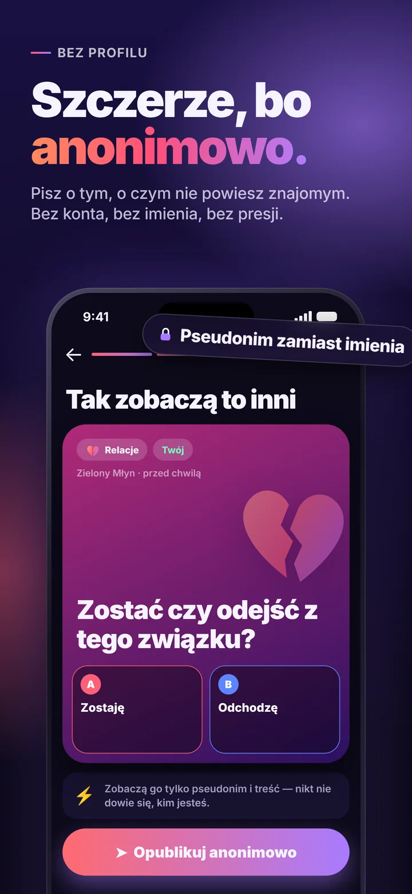
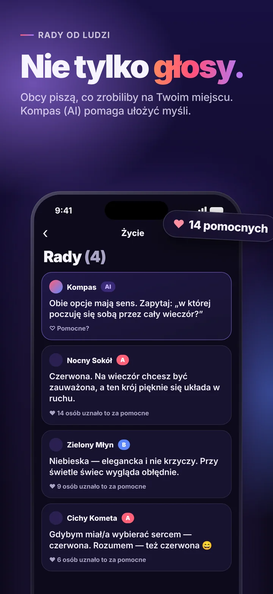

Nie wiesz, co wybrać?
Zapytaj obcych.
Opisz dylemat w dwóch opcjach. Nieznajomi głosują i dorzucają rady, a Ty widzisz wynik na żywo. Bez konta, bez e-maila, bez profilu.
Trzy ruchy do decyzji
Od „nie wiem” do „wiem” zajmuje to kilka minut.
Opisz dylemat
Zadaj pytanie i wpisz dwie opcje, A i B. Do każdej możesz dodać zdjęcie, na przykład dwóch sukienek albo dwóch mieszkań.
Niech zagłosują inni
Nieznajomi przesuwają kartę w lewo albo w prawo i wybierają. Pod spodem piszą krótkie, życzliwe rady.
Zobacz wynik
Procenty rosną na żywo. Przeczytaj rady, oznacz te pomocne i podejmij decyzję po swojemu.
Prosto jak przesunięcie palcem
Karty, które wciągają. Rady, które pomagają.


Wszystko, czego potrzebuje dobra decyzja
Mniej zastanawiania się w kółko, więcej świeżego spojrzenia.
Przesuń i zdecyduj
Głosowanie jednym gestem. Lewo to A, prawo to B. Szybko i bez wysiłku.
Wynik na żywo
Zobacz, jak rozkładają się głosy, i obserwuj, jak zmieniają się wraz z kolejnymi odpowiedziami.
Rady od ludzi
Krótkie, życzliwe wskazówki od innych. Oznacz te, które Ci pomogły.
Zdjęcia do opcji
Pokaż, co wybierasz: jedno zdjęcie do A i jedno do B. Najpierw sprawdzamy je ręcznie.
Pseudonim zamiast profilu
Dostajesz losowy pseudonim. Bez imienia, e-maila i telefonu.
Dylemat dnia i iskry
Codziennie nowy dylemat dla wszystkich. Za głosy i rady zbierasz iskry i budujesz serię.
Szczerze, ale z szacunkiem
- Zgłaszanie i blokowanie. Każdy dylemat i każdą radę możesz zgłosić, a autora zablokować.
- Filtr treści. Blokujemy dane kontaktowe, linki, spam i wulgaryzmy.
- Ręczne sprawdzanie zdjęć. Inni zobaczą je dopiero po zatwierdzeniu.
- Pomoc, gdy jej potrzebujesz. W aplikacji znajdziesz numery do rozmowy z człowiekiem.
- Pełna kontrola nad danymi. Konto i wszystkie dane usuniesz w Ustawieniach.
Nikt nie zobaczy, jak głosujesz. I nikt nie dowie się, kim jesteś.
Dylematy nie proszą o imię, e-mail ani numer telefonu. Nie ma reklam i śledzenia.
Pytania
Czy muszę zakładać konto?
Nie. Przy pierwszym uruchomieniu dostajesz anonimowe konto i losowy pseudonim, który możesz zmienić w Ustawieniach.
Czy ktoś zobaczy, jak głosowałem(am)?
Nie. Inni widzą wyłącznie łączny wynik. Autor dylematu zobaczy procenty, nie to, kto jak zagłosował.
Dla kogo jest aplikacja?
Dla osób od 16 roku życia. To miejsce do szukania świeżego spojrzenia na codzienne wybory, a nie zastępstwo dla terapeuty, lekarza czy prawnika.
Co z nieodpowiednimi treściami?
Można je zgłosić jednym dotknięciem, a autora zablokować. Zgłoszenia sprawdzamy ręcznie, zwykle w ciągu 24 godzin. Treści, które naruszają zasady, usuwamy.
Jak usunąć moje dane?
W aplikacji: Ustawienia, a potem „Usuń moje dane”. Kasujemy konto, dylematy, rady, głosy i zdjęcia.
Kiedy aplikacja będzie w App Store?
Wkrótce. Gdy będzie dostępna, umieścimy tu bezpośredni link.
Następny wybór
nie musi boleć.
Dylematy pojawią się wkrótce w App Store.